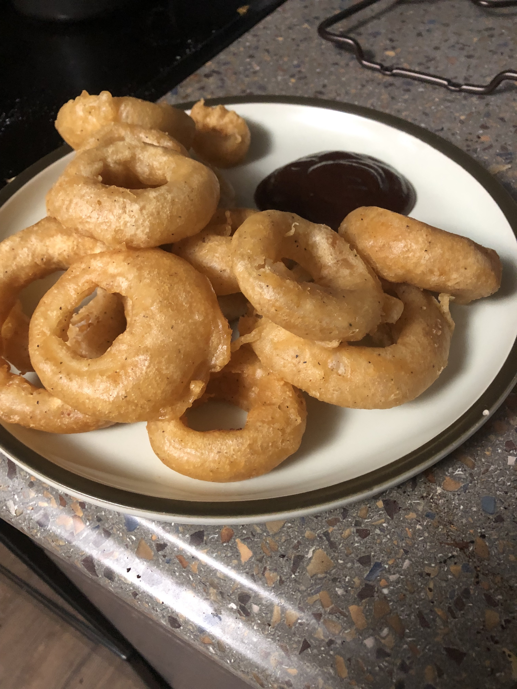

Onion Rings

Homemade Onion Rings
Homemade onion rings are a fun thing to make. Making them at home means they
are fresh and you have the power to make the rings as big or small as you would like.
Ingredients
- 1 large yellow onion
- Flour
- Salt
- Pepper
- 1 12oz can of a beer you like
- Vegetable or Peanut oil for frying
Steps
- Fill a bowl with 2 cups of flour, a pinch of salt, and pepper to taste
- Pour in the beer and whisk together until smooth
- Cover the batter and let rest in the fridge
- Cut the onion into rings and seperate the layers of onion
- Heat the oil in a deep pot until the temperature reaches 350F
- Dip the onion rings one by one into the batter to coat
- Working in batches, drop some batter covered onion rings into the oil
- Do your best to keep the temperature of the oil at 350F
- Fry the onion rings flipping once halfway through cooking until the are golden brown, 3-5 minutes
- Place the finished onion rings on a rack to drain off excess oil
- Serve with your favorite dipping sauce and enjoy!